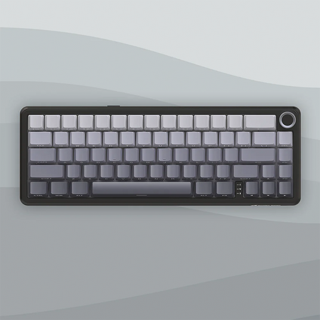

AuraType Pro

Деталі
AuraType Pro - це преміальна бездротова механічна клавіатура формату 75%, створена для максимальної продуктивності та комфорту. Завдяки технології Hot-Swap ви можете вільно змінювати перемикачі без паяння. Алюмінієвий корпус забезпечує монолітність конструкції, а багатошарова шумопоглинаюча піна всередині гарантує ідеально тихий тайпінг без зайвого відлуння.
Характеристики
- Підключення: Bluetooth 5.1 / USB Type-C
- Свічі: Gateron G Pro Red (лінійні)
- Кейкапи: PBT пластик подвійного лиття
- Батарея: 4000 мАг (до 240 годин роботи)
- Сумісність: Mac, Windows, Linux